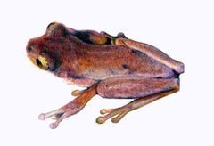

Tepuihyla rimarum
| Rana Tepuyana del Ptari-tepui | |
|---|---|
|  | |
| Riesgo de extinción | |
 Datos insuficientes (UICN) | |
| Clasificación científica | |
| Reino: | Animalia |
| Filo: | Chordata |
| Clase: | Amphibia |
| Orden: | Anura |
| Familia: | Hylidae |
| Género: | Tepuihyla |
| Especie: | Tepuihyla rimarum |
| Nombre binomial | |
|
Tepuihyla rimarum Ayarzaguena, Señaris et Gorzula, 1992 | |
| Distribución | |
 Mapa de distribución de Tepuihyla rimarum | |
Contenido
Información de Evaluación
- Categoría y Criterio Regional: Datos Insuficientes
- Fecha de Evaluación Regional: 2015
- Evaluadores: Jesús Morales-Campos y Ariany García-Rawlins
- Categoría y Criterio Global: Vulnerable D2
Justificación
Evaluaciones Previas
1999: No Evaluado (NE)
2008: Datos Insuficientes (DD)
Información General
Nombres comunes
ranita tepuyana del Ptari, rana tepuyana, rana de labios blancos, Ptari tepui frog, Gorzula's amazon tree frog.
Notas taxonómicas
Sinónimos
Tepuihyla rodriguezi
Descripción
Tepuihyla es un género de ranas de la familia de los hílidos (grupo que incluye a las llamadas ranas arborícolas), formado por apenas siete especies exclusivas del Escudo Guayanés, en Venezuela, y Guyana (Jungfer et al. 2013). Tepuihyla rimarum es una ranita de tamaño pequeño, cuyos machos pueden alcanzar hasta 3,2 cm, mientras que las hembras, más grandes, llegan a medir hasta 4,5 cm de longitud. Sus manos y pies poseen membranas rudimentarias o muy reducidas, y numerosos tubérculos palmares. El color dorsal es castaño oscuro con brazos y patas de un bandeado más claro y difuso; posee el labio claro característico de este género. Adaptada a los ambientes tepuyanos, aparentemente es terrestre y aunque se desconocen sus hábitos reproductivos sexuales, es probable que se reproduzca en ligeros cuerpos de agua, como sucede con otras de su grupo. Originalmente, estas especies fueron descritas en los géneros Hyla u Osteocephalus, pasando luego al género Tepuihyla (Ayarzagüena et al. 1992a, 1992b). Recientemente Salerno et al. (2012), Kok et al. (2012) y Jungfer et al. (2013) proveen información molecular de este grupo guayanés y sus relaciones con otros géneros hermanos.
Distribución
Esta especie solo se conoce en la parte más alta del Ptari-tepui, un tepuy de apenas 1,25 km2 de área de cima, dominado por superficies de roca desnuda y pequeñas islas de vegetación altotepuyana de turberas.
- Sistema: Terrestre, Dulceacuícola
- Bioregión:
- Intervalo altitudinal (m): 2400
- Endémica: Sí
Situación
Se desconoce su estatus poblacional, aunque se presume que sus poblaciones son estables. En observaciones recientes, Kok (2013) señala que parece ser una especie que habita a bajas densidades. En el ámbito global y debido a su hábitat muy restringido, Tepuihyla rimarum está considerada en la categoría Vulnerable, tanto por la Evaluación Global de los Anfibios (IUCN et al. 2006), como por la Lista Roja de la Unión Internacional para la Conservación de la Naturaleza (IUCN 2014).
- EOO (km2): 1,25
- AOO (km2): Temporalmente sin información
- Tendencia Poblacional: Desconocida
Amenazas
No se conoce con precisión ninguna amenaza particular que esté afectando a la especie y sus poblaciones, y es probable que más allá de su limitada y especializada distribución en la cumbre de un tepuy, no enfrente peligros mayores. Su condición de endemismo muy restringido la expondría potencialmente a catástrofes naturales, como sequías, inundaciones o incendios. También podría ser afectada por patógenos virales, bacteriales o micóticos, provenientes de otras regiones, tal como ha ocurrido con numerosas especies de anfibios a escala global (IUCN et al. 2006, IUCN 2014).
Conservación
No se ha tomado medida alguna para la conservación de la especie. Su área de distribución actual y potencial está protegida por el parque nacional Canaima, y también se encuentra amparada mediante el decreto Monumentos Naturales «Tepuyes», en zonas aparentemente en buen estado de conservación y sin amenazas evidentes. Se recomienda desarrollar investigaciones acerca de su biología y ecología, tamaños poblacionales, situación del hábitat y la monitorización de posibles amenazas para el género completo.
Autorías
Autores originales
Josefa Celsa Señaris y Fernando J. M. Rojas-Runjaic
Colaboradores
Ilustrador
Ximenamaria Rausseo
Referencias
Jungfer, K. H., Faivovich, J., Padial, J. M., Castroviejo-Fisher, S., Lyra, M. M., Berneck, B. V. M., Iglesias, P. P., Kok, P. J. R., MacCulloch, R., Rodríguez, M. T., Verdade, V. K., Torres Gastello, C. P., Chaparro, J. C., Valdujo, P. H., Reichle, S., Moravec, J., Gvozdik, V., Gagliardi-Urrutia, G., Ernst, R., De la Riva, I., Means, D. B., Lima, A. P., Señaris, J. C., Wheeler, W. C. y Haddad, C. F. B. (2013). Systematics of spiny-backed treefrogs (Hylidae: Osteocephalus): an Amazonian puzzle. Zoologica Scripta 42: 351-380.
Ayarzagüena, J., Señaris, J. C. y Gorzula, S. (1992a). El grupo Osteocephalus rodriguezi de las tierras altas de la Guayana venezolana: descripción de cinco nuevas especies. Memoria de la Sociedad de Ciencias Naturales La Salle 52(137): 113-142.
Ayarzagüena, J., Señaris, J. C. y Gorzula, S. (1992b). Un nuevo género para las especies del Grupo "Osteocephalus rodriguezi" (Anura, Hylidae). Memoria de la Sociedad de Ciencias Naturales La Salle 52(138): 213-221
Salerno, P. E., Ron, S., Señaris, J. C., Rojas-Runjaic, F., Noonan, B. P. y Cannatella, D. C. (2012). Ancient Tepui summits harbor young rather than old lineages of endemic frogs. Evolution 66(10): 3000-3013.
Kok, P. J. R., MacCulloch, R. D., Means, D. B., Roelants, K., Van Bocxlaer, I. y Bossuyt, F. (2012). Low genetic diversity in tepui summit vertebrates. Current biology 22(15).
Kok, P. J. R., Means, D. B. y Rivas, G. A. (2013). First record of the genus Anadia (Reptilia: Squamata: Gymnophthalmidae) from Guyana based on an enigmatic specimen from mount Kopinang, Wokomung massif. Boletim Museu Paraense Emílio Goeldi Ciências Naturais 8: 27-39.
IUCN, Conservation International y NatureServe (2006). Global Amphibian Assessment.
IUCN (2014). The IUCN Red List of Threatened Species. Version 2014.3. Accesible en www.iucnredlist.org.